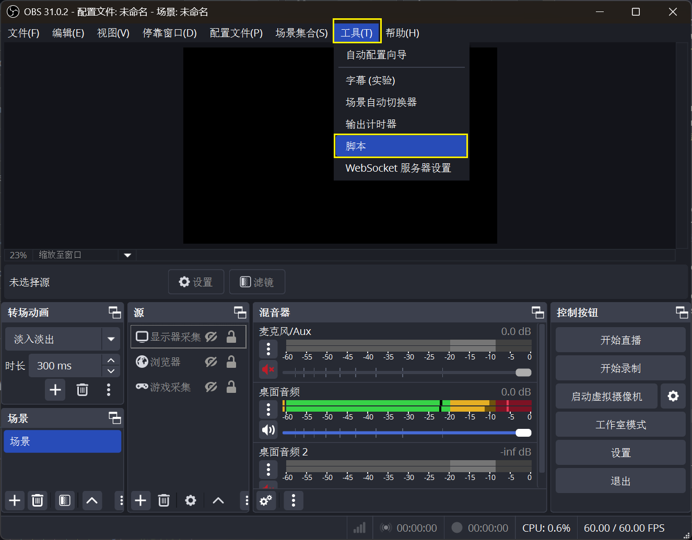
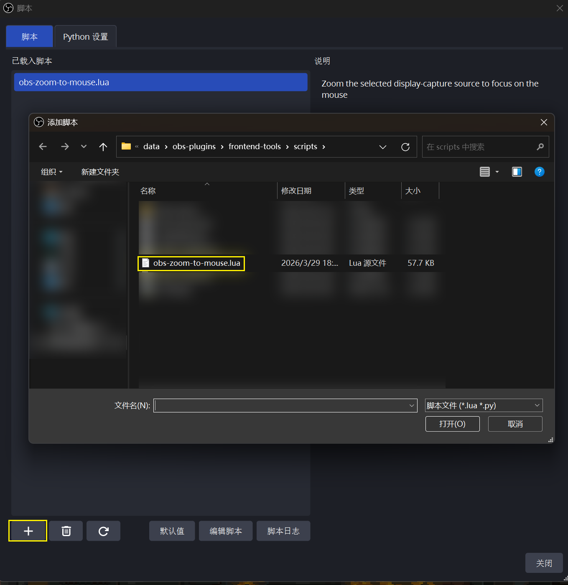
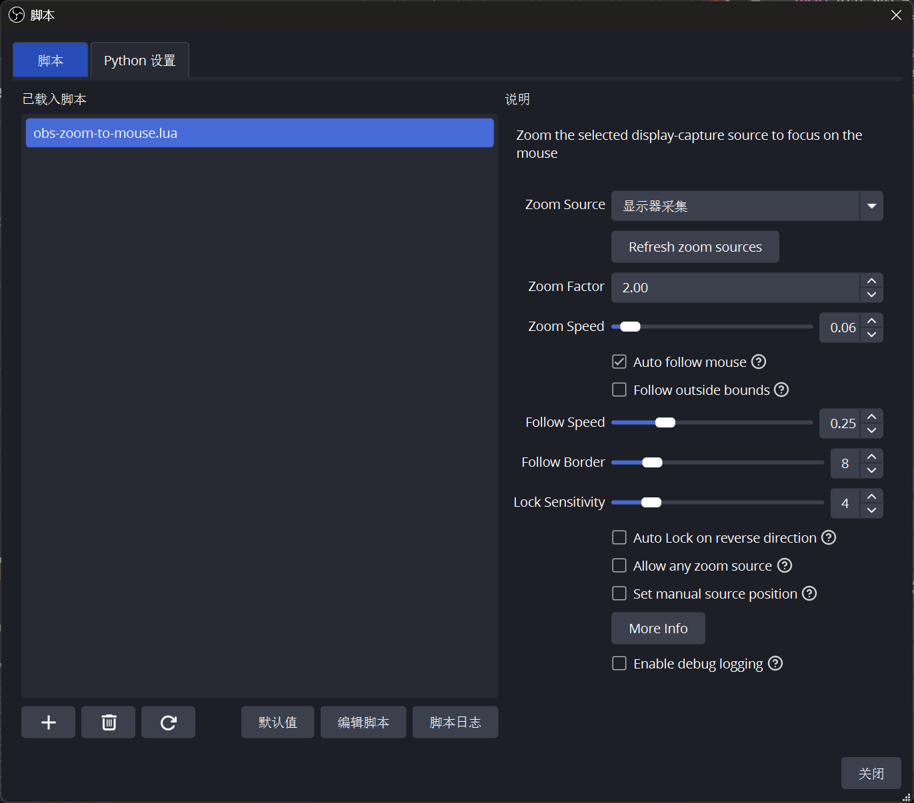
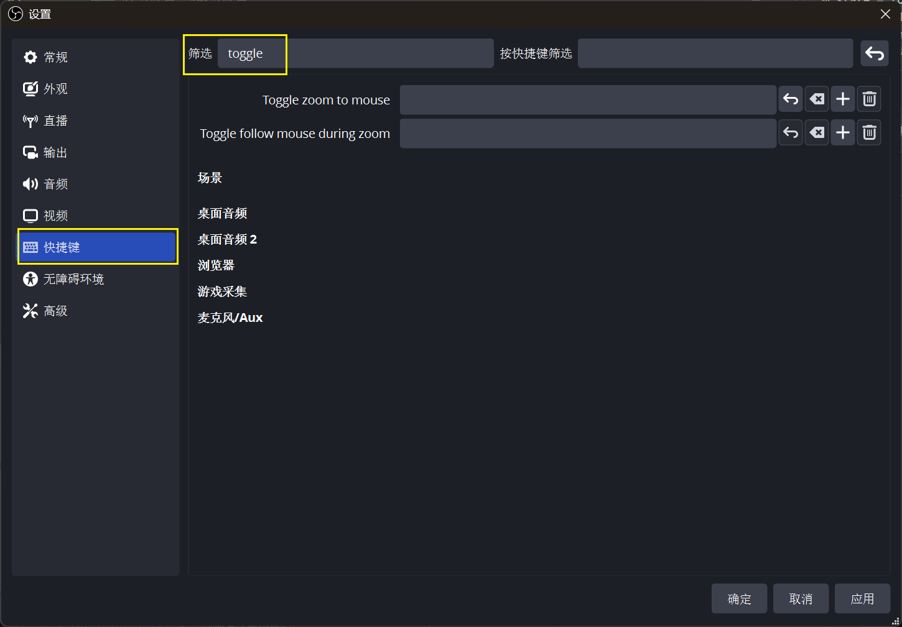

由于原版插件obs-zoom-to-mouse
作者已经于2023年暂停更新，该插件使用时感到非常困难，以及放大动画效果不太如人意，于是在原版插件的基础上进行了一些更改。
代码修改
核心修改：将zoom in的target从鼠标改成了提前开始计算的虚拟窗口
将原版插件大概500行左右的on_timer方法改为以下内容
1
2
3
4
5
6
7
8
9
10
11
12
13
14
15
16
17
18
19
20
21
22
23
24
25
26
27
28
29
30
31
32
33
34
35
36
37
38
39
40
41
42
43
44
45
46
47
48
49
|
function on_timer()
if crop_filter_info ~= nil and zoom_target ~= nil then
local smoothing = zoom_speed
if zoom_state == ZoomState.ZoomingOut or zoom_state == ZoomState.ZoomingIn then
-- 动画中实时更新目标，让缩放过程能跟上鼠标的变化
if zoom_state == ZoomState.ZoomingIn and use_auto_follow_mouse then
zoom_target = get_target_position(zoom_info)
end
-- 弹性移动
crop_filter_info.x = crop_filter_info.x + (zoom_target.crop.x - crop_filter_info.x) * smoothing
crop_filter_info.y = crop_filter_info.y + (zoom_target.crop.y - crop_filter_info.y) * smoothing
crop_filter_info.w = crop_filter_info.w + (zoom_target.crop.w - crop_filter_info.w) * smoothing
crop_filter_info.h = crop_filter_info.h + (zoom_target.crop.h - crop_filter_info.h) * smoothing
set_crop_settings(crop_filter_info)
-- 判断是否到位：如果位置和大小的差距都小于 0.5 像素，就认为到达了
local dist_pos = math.abs(crop_filter_info.x - zoom_target.crop.x)
local dist_size = math.abs(crop_filter_info.w - zoom_target.crop.w)
if dist_pos < 0.5 and dist_size < 0.5 then
if zoom_state == ZoomState.ZoomingIn then
zoom_state = ZoomState.ZoomedIn
if use_auto_follow_mouse then
is_following_mouse = true
log("丝滑放大到位")
end
else
zoom_state = ZoomState.None
is_timer_running = false
obs.timer_remove(on_timer)
log("丝滑还原完毕")
end
end
else
-- 放大后的平滑跟随逻辑
if is_following_mouse then
zoom_target = get_target_position(zoom_info)
-- 这里也改成弹性跟随，让鼠标移动时镜头感更柔和
crop_filter_info.x = crop_filter_info.x + (zoom_target.crop.x - crop_filter_info.x) * follow_speed
crop_filter_info.y = crop_filter_info.y + (zoom_target.crop.y - crop_filter_info.y) * follow_speed
set_crop_settings(crop_filter_info)
end
end
end
end
|
使用方法
- 在obs中添加脚本

- 导入改好的脚本

- 设置脚本

- 设置缩放快捷键，在搜索框中输入toggle

- 最终效果演示